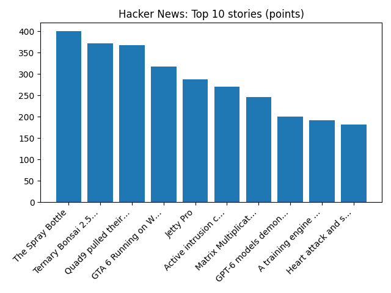

US attorney general dodges questions about Nvidia investigation
BBC — World
YOUR DAILY INTELLIGENCE BRIEF · 2026-11-25

Global coverage includes US attorney general dodges questions about Nvidia investigation; Army to detonate US stockpile of bomb-making chemicals in Iowa the day before Thanksgiving - AP News; Huawei found guilty of stealing trade secrets but acquitted of racketeering. Local coverage includes Arlington County expands Transitway BRT into Pentagon City - Mass Transit.

Teddy Andrulewicz
He played college football at Villanova University, participating in eleven regular season games during one season in 1930. He had one receiving touchdown.
https://en.wikipedia.org/wiki/Teddy_Andrulewicz
Galaxies Battle in the NGC 7771 Group
Runs so far today: 1